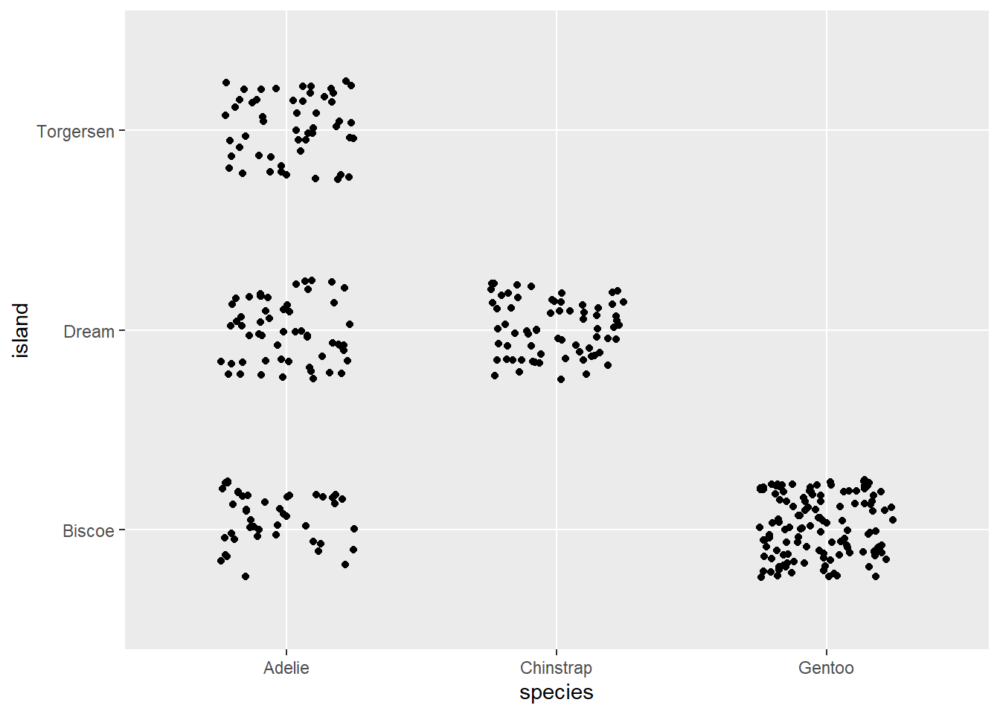
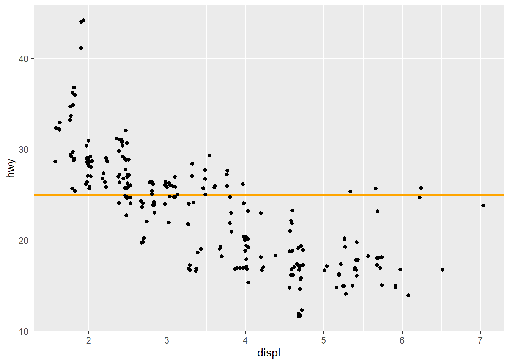

ggplot(mpg, x = displ, y = hwy) +
geom_point()Day 1B
We continue after lunch with a deep dive into the fundamentals of data visualization in R using the ggplot2 package (part of the tidyverse). This will include a conceptual overview of the grammar of graphics and hands-on practice creating scatterplots, variation plots, and covariation plots.
Slides
Data Files
- salaries (professors’ salaries by rank, discipline, etc.)
Practice 1
For each of the following code snippets, find and fix the error(s).
- “The Scatterbrained Scatterplot”
- “Not-so-smooth Smoothing”
ggplot(mpg, aes(x = displ, y = hwy)) +
geom_point()
geom_smooth(shape = "triangle")- “A Leaky Pipeline”
ggplot(economics, aes(x = date, y = unemploy)) |>
geom_point()
Click here for the answer key
Part (a)
The code forgot to put the mappings inside
aes().library(tidyverse) ggplot(mpg, aes(x = displ, y = hwy)) + geom_point()
Part (b)
The code tried to set the shape aesthetic for the wrong geom (smooths don’t have shapes).
ggplot(mpg, aes(x = displ, y = hwy)) + geom_point(shape = "triangle") + geom_smooth()Part (c)
The code used pipes instead of plus signs to connect ggplot2 commands.
ggplot(economics, aes(x = date, y = unemploy)) + geom_point()

Practice 2
Install and load the {palmerpenguins} package.
Recreate the following graphic as closely as you can from the
penguinstibble in that package (don’t worry about getting the point size exactly right).
Click here for the answer key
Answer (a)
# Extra pane > Packages tab > Install button > palmerpenguins > Install # Or, in console: install.packages(palmerpenguins) library(palmerpenguins)Answer (b)
ggplot(penguins, aes(x = flipper_length_mm, y = bill_length_mm, color = species, shape = species)) + geom_point(size = 2)

Practice 3
Create a plot from the following text description. Take the penguins dataset (from Question 2) and create a scatterplot where penguins with higher body mass are further to the right on the plot and penguins with higher bill depth are higher on the plot. Color each point based on which island that penguin was observed at and add a smoothing line to show the relationship between body mass and bill depth for each island.
Click here for the answer key
ggplot(penguins, aes(x = body_mass_g, y = bill_depth_mm, color = island)) + geom_point() + geom_smooth()
Practice 4
Load the {palmerpenguins} package (after installing it, if you haven’t already) to gain access to the penguins dataset.
Create a visualization to depict the number of penguins from each
speciesobserved in the dataset. To match the penguin color scheme, make your bars white with thick black borders. Which species was least commonly observed?Create a visualization to depict the distribution of the penguins’ observed body mass (
body_mass_g). You can choose whether to use a histogram or density plot. What were some common values of body mass for the observed penguins?Using a tool from last week, filter the data to only include female penguins and then use it to repeat part (b). Does this plot look different than it did before?
Click here for the answer key
Part (a)
library(tidyverse) library(palmerpenguins) ggplot(penguins, aes(x = species)) + geom_bar(fill = "white", color = "black", linewidth = 2)The chinstrap species was the least commonly observed.
Part (b)
ggplot(penguins, aes(x = body_mass_g)) + geom_density(linewidth = 2, fill = "white")Warning: Removed 2 rows containing non-finite values (`stat_density()`).Most of the penguins were around 3500 g, but the masses ranged from a bit below 3000 to a bit above 6000.
Part (c)
penguinsF <- penguins |> filter(sex == "female") ggplot(penguinsF, aes(x = body_mass_g)) + geom_density(linewidth = 2, fill = "white")Yes, it has two humps (i.e., common values) now: around 3500 and around 4750. We call this shape a “bimodal” distribution.
Practice 5
Use the unfiltered penguins dataset to answer these questions as well.
Use the boxplot geom to depict the distribution of penguins’ body mass by species. Which species is the most massive?
Use the density geom to depict the distribution of penguins’ body mass by sex. Does there appear to be a sex difference in the body mass distributions?
Create a visualization to depict which penguin species were observed the most (and the least) at each island. Which species was observed across the highest number of islands?
Click here for the answer key
Part (a)
ggplot(penguins, aes(x = body_mass_g, y = species)) + geom_boxplot()Warning: Removed 2 rows containing non-finite values (`stat_boxplot()`).The Gentoo species have the highest body mass distribution.
Part (b)
ggplot(penguins, aes(x = body_mass_g, color = sex)) + geom_density(linewidth = 1)Warning: Removed 2 rows containing non-finite values (`stat_density()`).The male distribution seems shifted higher relative to the female distribution, though the two overlap.
Part (c)
ggplot(penguins, aes(x = species, y = island)) + geom_jitter(width = 0.25, height = 0.25)
The Adelie species was the only one observed at all three islands.
Practice 6
Use the mpg dataset (included in {tidyverse}) to answer these questions.
Create a scatterplot to depict the relationship between engine size (
displ) and highway fuel efficiency (hwy).Modify your plot from part (a) to add a reference line to this plot showing where highway fuel efficiency equals 25 miles per gallon; make the line orange, 1mm thick, and displayed behind/below the points.
Finally, modify your plot from part (b) to randomly push each point a small amount. This will make it easier to see when there are multiple overlapping points, i.e., cars with the same engine size and highway fuel efficiency.
Click here for the answer key
Part (a)
ggplot(mpg, aes(x = displ, y = hwy)) + geom_point()
Part (b)
ggplot(mpg, aes(x = displ, y = hwy)) + geom_hline(yintercept = 25, color = "orange", linewidth = 1) + geom_point()Part (c)
ggplot(mpg, aes(x = displ, y = hwy)) + geom_hline(yintercept = 25, color = "orange", linewidth = 1) + geom_jitter()
Jittering can be helpful for continuous variables too! Consider this whenever you have overlapping points.

Readings
- Chapter 2: Data visualization from R4DS (2E)
- Section 5.4: ggplot2 code style from R4DS (2E)
- Chapter 10: Layers from R4DS (2E)
- Chapter 11: Exploratory Data Analysis from R4DS (2E)
- Chapter 2: First steps from GGPB (3E)
- Chapter 3: Individual Geoms from GGPB (3E)
- Chapter 4: Collective Geoms from GGPB (3E)
- Chapter 13: Building a plot layer by layer from GGPB (3E)
Fun Stuff
Don McMillan’s Greatest Charts
Would these have be more or less funny if Don had used R?